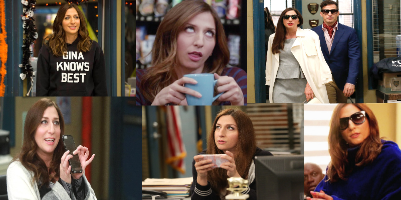

Gina Linetti
Born in 1981
Occupation administrator at the 99th precinct and internet celebrity.
Family:
●Darlene Linetti (mother)
●Enigma (daughter)
Gina Linetti is a main character of the show. She is the only civilian in the 99th Precinct and works as an administrator, she often leaves the precinct to dance or do something related to her internet fame. She left the Precinct with Captain Holt to go to the NYPD’s Public Relations Office. She is a proud member of a dance group called “Floor-Gasm” and often tries to get the squad to join in dancing and watch her routines. Gina and Jake Peralta were childhood friends and spent a lot of time at Jake’s Nana’s. When she was a teenager, she went to the Junior Police Program for at risk youth which she claims does not work, this is significant as the squad must run the program and Gina tries to change the way it is done. Jake was the main reason she got the job at the 99th precinct, she is good at saving money and proved that she is financially responsible. Gina has an odd personality, she is an extreme narcissist, very sarcastic and full of herself, however the squad regard her as harmless. She is always on her phone, and often does very little of the work she is supposed to. She is also often winding up Charles Boyle or flirting with Terry Jeffords. She believes in psychics and often has one brought to the squad, and strongly believes in astrology. Her hobbies include surfing the internet and dancing. She believes her dancing is amazing however it is viewed as weird by the others. She rarely shows that she cares for others except for Jake as they grew up together and their friendship is shown to be the strongest, she has with anyone.
